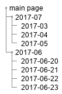
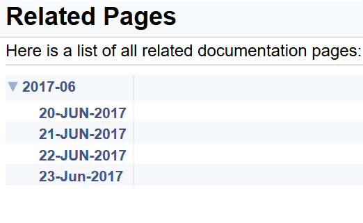

|
Developer's Diary
Software development, with Terry Ebdon
|
|
Developer's Diary
Software development, with Terry Ebdon
|
Wednesday 5th July, 2017
Until now I've had a choice of either using superscripts in date headers or using a page-level table of contents. The two features were mutually exclusive. I'd implemented date superscripts via the HTML "<sup> ... </sup>" mechanism. This works fine, with table of Contents disabled. To use both together I had to paste the UTF-8 characters into the page. Entities didn't work. The final result isn't perfect, but it's a good-enough compromise.
I used Tiny Text Generator to create the superscript text.
I like Doxygen's tree-view, but it's far too wide. By default it's 250 pixels. The documentation claims this is adjustable in configuration:
TREEVIEW_WIDTH
If the treeview is enabled (see GENERATE_TREEVIEW) then this tag can be used to set the initial width (in pixels) of the frame in which the tree is shown.
Minimum value: 0, maximum value: 1500, default value: 250.
That doesn't work, for me. I changed the value to 150, with no effect. To be revisited.

|

|
I have a Doxygen web site with two top-level pages: 2017-06 and 2017-07. Daily sub-pages are beneath each top-level page. I'd expect to see all pages listed on Related Pages. But I only see June's pages, not July's.
The clue is in the page name "related pages". In this case the main page is 2017-07. So that page, and all its sub-pages, are excluded from the related page.
I needed a quick work-around, that didn't involve major re-writes, broken links and structural changes. My first attempt was to:
EXAMPLE_PATH.Like this:
This broke a couple of links on the included about page. These were reference links to pages that aren't yet on the site. Using broken reference links from a non-included page causes a warning and the link is converted into plain text. e.g. [example](@ref example) is rendered as the plain text "example", with the URL removed. But if that same markdown link is in an include file, it's rendered as is, i.e. this is displayed in the browser: [example](@ref example). @includedoc is supposed to honour the included markdown... with some restrictions, and they're not all documented.
From the documentation:
\includedoc <file-name> This command works the same way as \include, but it will include the content of the file as if it were at the place where this command is called. The result is that the content is parsed by doxygen and placed in the documentation.
- Note
- Some commands like \cond and \if don't work with this command due to the moment of parsing.
- The included documentation should not have comment signs in it as the will appear in the documentation as well.
So \includedoc is like the parson's egg: good, in parts.
At this point the includedoc feature could cost me more time than it saves.
I'll revisit this possibly with a pre-build step to assemble the files.
Maybe something similar to this pseudo code:
Find me coding on GitHub, networking on LinkedIn and hanging out on twitter.
 1.8.18
1.8.18